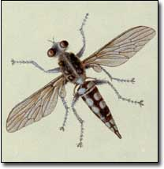

Tachinid flies (Tachinidae) are a prime example of the many beneficial, but mostly unseen, creatures that make it possible for us to enjoy naturally healthy gardens without the use of pesticides. They are small and inconspicuous, but they are doing a mighty big job for us.
Tachinids parasitize other insects. They employ a variety of tactics as “the party guest from hell” when they move in, uninvited, and proceed to eat their hosts. They may glue their eggs to their host or lay their eggs on foliage where the host larvae will eat them. Some have ovipositors with which they inject their eggs directly into the unsuspecting host’s body.
Extremely beneficial because of their diversity, tachinids also can be very under-appreciated due to their small size and unseen activities. They help control garden pests such as gypsy moths, cabbage loopers, Japanese beetles, armyworms, cutworms, sawflies, codling moths, peach twig borers, pink bollworms, tent caterpillars, squash bugs and many more.
The scientific information is rather general concerning tachinids. Only a few of the 1,300 North American species have common names, and only about 20 percent can be identified with a hand lens and field guide.
Tachinid flies are similar in shape and size to houseflies (usually less than a half inch in length) but they usually project a few stiff hairs backwards, over and slightly beyond the abdomen. Most of them are considered rather drab in color.
The tachinid species that seek out moth and butterfly hosts usually glue their eggs to the moth or butterfly larvae; after the eggs hatch, the resulting fly larvae bore into their host, eventually killing it. When beetles are the host, either larva or adults can be parasitized, depending on what kind of tachinid is involved. Tachinids usually attack adults of the true bug and grasshopper orders.
Egg and larvae development happen quickly in tachinid flies. Many species pass from the early stages to adulthood in just three to four weeks. If the host also moves through life stages quickly, several generations can be produced in one garden season.
After a larva has invaded or formed inside the host, it maintains respiration by either attaching its breathing (posterior) end to its victim’s tracheal system or leaving that end protruding from the victim’s body.
Research is ongoing on several species of tachinids; to date, the cutworm type has been shown to reduce populations of the variegated cutworm, the army worm and the yellow-striped army worm.
Unfortunately, tachinids are not available as commercial pest controls, but the adult flies feed on nectar, so you can attract them to your garden by growing plants with umbel-type flowers, including carrots, cilantro, dill, coriander, buckwheat and sweet clover. - John Stuart
(For more about beneficial insects, see “ Protect Your Garden with Beneficial Bugs ,” Page 74.)
|
 |
|
|